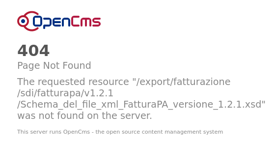

Assets¶
fattura-elettronica-reader needs to download some files from the Agenzia delle Entrate website.
Files cannot be included in this repository because of the website copyright. See https://www.fatturapa.gov.it/it/copyright/index.html
For sake of completeness, the current supported versions and the SHA-512 and SHA-256 checksums are reported in the following table:
Name |
URL |
SHA-512 |
SHA-256 |
|---|---|---|---|
XML schema for FatturaPA version 1.2 |
|
|
|
XML schema for FatturaPA version 1.2.1 |
|
|
|
XML stylesheet for Fattura Ordinaria version 1.2.1 |
|
|
|
XML stylesheet for FatturaPA version 1.2.1 |
https://www.fatturapa.gov.it/export/documenti/fatturapa/v1.2.1/Foglio_di_stile_fatturaPA_v1.2.1.xsl |
|
|
Public keys file |
|
|
Warning
fattura-elettronica-reader is guaranteed to work with these file versions only!
Important
The XML schema file for FatturaPA version 1.2.1 needs to be patched. fattura_elettronica_reader runs the SHA-512 checksum on the patched version of that file which corresponds to:
a1b02818f81ac91f35358260dd12e1bf4480e1545bb457caffa0d434200a1bd05bedd88df2d897969485a989dda78922850ebe978b92524778a37cb0afacba27
Some of these file are checked in the pipeline:
if the checksum does not match the ones present in the source code an exception is raised.
You can use the --ignore-assets-checksum option to override this behaviour.
Relevant Updates¶
October 2020¶
The original URL of the schema file dissapeared.
A new URL points to the schema:
This resource has been Last-Modified: Tue, 20 Oct 2020 19:29:21 GMT according to the HTTP headers.
Same goes for the XML stylesheet files:
FatturaPA:
Last-Modified: Tue, 20 Oct 2020 18:00:14 GMTFattura Ordinaria:
Last-Modified: Tue, 20 Oct 2020 18:08:05 GMT
June 2019¶
According to the server the schema was last modified on
Tue, 25 Jun 2019 10:16:31 GMT, so they fixed an offending xsd typo:
Before June 2019¶
Initially the schema file was reported as incorrect by lxml because of a typo.